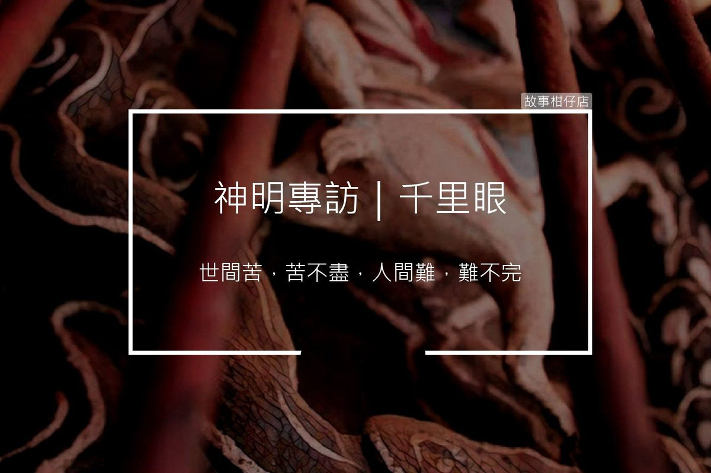

神明專訪/千里眼

採訪人物：千里眼
採訪人：剪溜
採訪時間：民國107年，晚間十點
採訪地點：天后宮正殿
故事回顧：
剪溜：祢好，聽說您曾是妖怪，為什麼後來跟著天后娘娘走跳？
千里眼：小兄弟，你可能不知道我聽不見？跟我講話時要慢一點，我才能讀你唇語。
說起這段過去，想起來還是很不好意思啦。我跟我弟，喔！就是順風耳，以前我們還沒這封號。我們生前是部落的大將哩，常常為了保護村民去打仗。雖然我們兄弟倆一個看不見、一個聽不到，但真的沒輸過啦！
但有一次誤進敵軍陷阱，死啦。我倆孤魂野鬼流浪到一處桃花山，風景美、空氣又好，住起來很舒服耶。只是喔，很多妖魔鬼怪來踢館，我們就好像過五關斬六將那樣，一直打、一直贏，法力愈來愈高強。
嗯……，你也知道，人喔，愈來愈強的時候，就很容易腳步踏岔啦，我們也一樣。我跟我弟就開始作亂，調戲民女啦、毀掉農作物啦……，哎喲，實在是喔，年輕不懂事。
有一天，我跟我弟躲在路邊想搶劫，迎面來了個女生，超～漂亮的！我們就想把她搶回家當老婆。現在想起來有夠丟臉，我有眼無珠，她竟然是媽祖娘娘！我們這樣騷擾村民，她看不下去，特地來降服我們。後來我們兄弟就成為媽祖娘娘的護法，還給了我們千里眼、順風耳的封號。
剪溜：走跳這些年，你有沒有印象比較深的人、妖或鬼？
千里眼：很多年前，有一個小孩子來廟裡，哭著說媽媽失蹤半個月找不到，希望媽祖娘娘指示，保佑他快點找到媽媽。這是小事，我睜大眼睛一看，原來他媽媽早已丟下他搭著火車到北部，跟另一個男人同居，過得很開心。
啊，有件事你可能不知道，我不只視力很好，還能看到未來的事，但是媽祖娘娘不准，祂說，一切生死有命，我們知道得太多，便會被俗情所擾。不過，唉，我雞婆啦，還是偷看了一下未來，這個孩子因為知道被媽媽拋棄，整個性情大變，二十年後的一個晚上，他也拋棄了妻小，上吊自殺。
我就想，既然他媽媽說什麼都不會回來，乾脆讓他誤以為媽媽早已遭遇不測，也許不會造成二十年後的悲劇。但是媽祖娘娘只是淡淡地說，命在人自己手上，今日種下不同的因，未必就能結不同的果。
這道理我也曉得，但可能我太雞婆，有時候還是沒辦法做到像娘娘這麼公正。想一想，也許我這樣反而會害了信徒。
剪溜：關於您的兄弟順風耳，您們一直都合作無間，從沒吵架？
千里眼：我們一個千里眼、一個順風耳，就是要協助娘娘視察民情，聽音救苦。人家都說，媽祖娘娘繞境時，都沒有固定的路線，其實那是我們一前一後，眼看四面、耳聽八方，哪裡有難，就往哪裡去。
娘娘法力無邊，但是啊，世間苦，苦不盡，人間難，難不完。每當繞境，看到這麼多信徒很感動，也很痛苦。時常順風耳聽見百里之外有愁煩子女的父母啼哭，我看見另一頭有冤親債主纏身的人臥床多年，一時之間，神轎該先去哪裡？百姓苦難，難道分得出輕重緩急嗎？
每回繞境，我們兄弟總為了路線吵架，不是誰的苦比較苦，而是只要人不分貴賤貧富，只要心存善念，我們都想幫忙。所以你看喔，有時神轎會突然停下來，其實都是我們兄弟在吵著現在先往哪裡去，當然最後還是交給娘娘定奪啊。
不過通常吵了也沒意義，因為娘娘其實很好管閒事，啊，不是，是慈悲為懷，只要百姓有難，她都會去，時間先後而已啦。
剪溜：天后娘娘照顧您這麼久，你有甚麼話想跟祂說嗎？
千里眼：娘娘真的對我們很照顧，光是讓我們兄弟兩妖精冊封為神將，感謝都來不及啦，況且娘娘公正不阿又慈悲心腸，光是這一點，就值得我跟順風耳永遠效忠祂。
只是說喔，娘娘本名林默娘，你知道吧？娘娘平常不多話，但脾氣拗起來也很不得了。怎麼說喔？好啦，這我們私底下講的。你知道大道公，就保生大帝啦，祂之前我們娘娘追不到，還被訓了一頓，男人面子哪掛得住啊？
所以祂就故意選在娘娘生日出巡那天下起傾盆大雨，把我們淋得跟落湯雞一樣。有一年我弟還因此感冒，躺了整整五天。
我們娘娘也不是省油的燈啊！隔年換大道公生日出巡，娘娘故意刮起大風，把大道公的烏紗帽吹落地。啊喲，從此以後，這兩人年年鬥法，你雨我風的互相挑釁。
我是很想跟我們娘娘說，都戰這麼久了，大家一笑泯恩仇嘛，要不然每次祂生日出巡都會遇到大雨，實在有點麻煩哩。